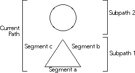
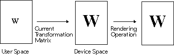
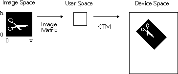
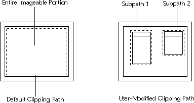

Drawing
The Drawing classes provide a consistent and powerful rendering abstraction based on the PostScript imaging model. The Drawing classes also encapsulate platform-specific graphics systems, such as Macintosh QuickDraw, X11 Xlib, or the Windows Graphics Device Interface (GDI), to provide functions that an application uses to generate graphical output for displays, printers, and other raster-graphics hardware devices.
The Drawing classes insulate you from the details of the actual hardware device used for rendering, letting you deal with an idealized environment. The Drawing classes take care of translating rendering directives from this idealized space to the actual hardware device environment. The use of an idealized rendering environment allows for the creation of device-independent graphics. Thus a single rendering algorithm can be expressed on a variety of output devices, including bitmap displays, printers, and off-screen images.
- closed path A path in which each point in the path has both an
incoming and outgoing connection to another point in
the path.
clipping path A path defining the boundary in which all output is drawn. Sometimes referred to as a clipping region.
coordinate system Describes a point space of a given dimension with respect to a system of lines or other fixed reference.
device independence Ability to generate page descriptions that can be expressed on any output device.
device-space Coordinate system that reflects the metrics of the actual hardware device's page, including the page's dimensions (width and height) as well as its resolution.
display device Any hardware device that presents information in a visual form.
fill Basic operation that paints within a given path or rectangle.
graphics A pictorial representation of data.
path Arbitrary sequence of points. Refer to Figure 28.

- point Quantity that specifies a location of a particular
coordinate.
PostScript Popular page-description language, developed by Adobe Systems Inc. Postscript is designed to translate printable graphics from a computer-based composition system to a raster-output system.
PostScript interpreter Software program that translates PostScript directives into device-specific codes to generate the graphics drawn on a page.
PostScript imaging model Page description abstraction that describes a page as a two- dimensional coordinate system. Images are built by drawing on selected areas using fill and stoke operations. Analogous to an artist moving a pen or brush across a page of paper.
render Represent or draw a graphic.
resolution Density of points in a particular coordinate space. In user- space, a point is defined to be exactly 1/72 of an inch. In device-space, resolution varies from device to device.
rotation Rotating the axis of a particular coordinate space.
scaling Changing the dimensions of a point relative to a particular reference axis.
segment One line in a subpath. Refer to Figure 28.
subpath Section of a path. Refer to Figure 28.
transformation Mapping one coordinate system into another.
translation Moving the origin of a particular coordinate space.
user-space Idealized two-dimensional coordinate system within which all rendering directives are made. The drawing classes are responsible for translating these directives into the appropriate hardware device-space.
Drawing Path
One method of rendering is accomplished by constructing a path (vdrawpath) of line and curve segments, then either drawing (outlining) it or filling it with color. In a path composed of disconnected segments, each disconnected part of the path is known as a subpath. Paths are created by a series of path construction functions, the most basic of which are described below.The Drawing rendering model uses the concept of a set of connected points (a path) in a two-dimensional coordinate space. The location of the origin is arbitrary and is defined to be whatever is most convenient. Usually the origin is defined as the lower, left-hand corner of a page, meaning that a positive x and y pair describes each point on the page. Note that this coordinate system model is different from those used by many other graphics system where the origin is usually defined as the upper, left-hand corner of the display device.
For efficiency as well as convenience, the drawing context class (vdrawcontext) provides fill and draw operations to construct and render rectangular paths. When rendering on a window or image device, these functions are likely to be more efficient than creating rectangular paths with path construction functions. To specify a rectangular region, the drawing context class uses the rectangle class (vrect).
The Drawing classes also use the transform class (vtransform) to transform page description information from one coordinate space to another. The three types of transformations that can be accomplished are translation, rotation, and scaling.
Most standard drawing functions accept double and integer values as arguments.
Drawing Context
A drawing context (vdrawcontext) contains information such as the current drawing location and the pen used for drawing. A pen (vdrawpen), in turn, contains attributes such as the color and line width. The drawing context uses these attributes to directly fill or draw lines, rectangles, arcs, strings and other drawing objects. A drawing context also can fill in or draw a specific drawing path.
Drawing operations can be directed at different kinds of devices. The device attribute of a drawing context specifies the device on which a painting function leaves marks, and is called the current drawing device. Galaxy provides device drivers for windows, images, and PostScript printers.
User Space And Device Space
The drawing context class maintains two parallel coordinate systems for drawing operations: user space and device space. In the user-space coordinate system, a drawing is specified as an ideal, device-independent, picture description, often expressed in points. In the device-space coordinate system, a drawing is specified in terms of actual device pixels. The drawing context class maps user-space coordinates to device-space coordinates according to the current transformation matrix specified in the drawing context.
Figure 29. User space and device space

The user-space origin is located in the lower left corner of the device, with coordinate values increasing up and to the right. User-space units are initialized to one point (1/72 inch). The scale and orientation of the coordinate system, however, can be changed through the drawing context class. Functional interfaces for the most common display transformations, such as rotation and scaling, are provided so explicit scaling and rotating computations are generally not necessary.
Figure 30. Image transformations

The drawing classes uses another similar coordinate system, called character space, to specify character shapes. Font class methods transform these shapes to user-space and subsequently to device-space. Refer to the Font chapter for information on how to specify, create, and modify fonts.
Figure 31. Clipping paths

Whenever portions of the window need to be redrawn, the window class sets the view clipping path. For this reason, you should not modify the view clipping path while updating is taking place. Some devices ignore the view clipping path, so it is important that you not depend on the view clipping path for your drawing.
You can set the user clipping path to specify the region to be rendered as required by your drawing. The user clipping path is stored on a per-drawing-context basis.
Many attributes are set by modifying the context's pen. Retrieve the current pen by using GetPen. The pen can then be used to set various drawing attributes. To specify the color when drawing or filling, use SetColor. For information on defining colors and color specifications, refer to the Color chapter.
Use SetLineWidth to specify the pixel width of lines. The default width is one pixel, although this can be set to be a higher value as needed. You can also use SetLineCapStyle, SetLineJoinStyle, and SetLineJoinMiterLimit to control the style of line drawing you may want to perform.
When drawing text, specify the font for the text with SetFont. For information on fonts, refer to the Font chapter.
All drawing is done from a point of origin (where both the x offset and the y offset are equal to zero). The default point of origin for a drawing context is the lower left hand corner of the current device coordinate system (for example, a dialog or container). Use Translate to change the point of origin to some other location. Example 45 changes the point of origin from the current location to the lower left hand corner of a dialog item.
Sometimes it is necessary to create several subpaths in one drawing operation. To do this, a new path should be created separate from other subpaths previously created.
Note that it is also possible to fill a path, as illustrated in Example 47.
Example 47. Filling a path
Example 48. Drawing rectangles
Example 49. Drawing ellipses using rectangles
Note the similarity between Example 50 where the entire rectangle is referenced, and Example 23 where each point in the rectangle is specified.
Example 50. Using a rectangle to draw an ellipse
Example 51. Drawing text
Example 52 loads an image from the application resource file and displays it in the window's visible area. The image is automatically scaled to fit the drawing context's displayable area.
Example 52. Drawing images
Whenever portions of the window need to be redrawn, the window class sets the view clipping path. For this reason, you should not modify the view clipping path while updating is taking place, such as in an overridden method that controls the drawing of updated regions.
Do not depend on the view clipping path, since some devices ignore the view clipping path.
Image and Character Space
The drawing classes use another kind of coordinate system, image space, for image operations. When images are brought into Galaxy, the drawing imposes a known rectangular coordinate system on the image data. The purpose of the image space coordinate system is to structure the source image so that it can be mapped to user space, and from there to device space. The Drawing class uses the image matrix to perform the transformation from image space to user space. Once mapped to user space, the image can be drawn onto the target device using the drawing context's transformation matrix. Clipping Paths
The drawing context class provides two clipping regions: the view clipping path and the user clipping path. Pixels must lie inside both clipping paths to be painted by drawing operations; pixels outside either of the two paths are unaffected by drawing. For example, trying to draw outside of an application's known windows is not possible, since the view clipping path extends only to windows that belong to your application. Key Functionality
Most drawing operations take place in four steps:
Most drawing routines provide a drawing context for you. For example, a dialog item's draw method looks like the following:
void myDraw (vdrawcontext *context)
{
// Do your drawing here.
}
Sometimes, though, it is necessary to create a drawing context. As a result, most graphical objects provide a CreateDrawcontext method. For example, the following creates a drawing context from a dialog item:{
vdrawcontext *context;
vdialogItem *diSomething;
//...
context = vdialogCreateItemDrawcontext(diSomething);
// Now use the context to draw on the dialog item
//...
}
This ensures that all drawing takes place on an isolated graphics state and does not interfere with or overwrite other drawing actions that might be performed.
Before drawing, it is sometimes necessary to modify the attributes of the drawing context. If the drawing context is passed in as an argument to a method from the calling method, do not modify it. Instead, clone it and modify the clone. Modifying a drawing context passed as an argument to a method can cause unpredictable behavior later in the program's execution. If the drawing context was created in the method with vdialogItemCreateDrawcontext or another method that returns a drawing context, it is not necessary to clone it before changing its attributes.
Example 45. Changing the point of origin
void ChangeOriginToItem (vdrawcontext *context, vdialogItem *item)
{
/* First, get the rectangle of the dialog item */
const vrect *rect = vdialogGetItemRect(item);
/*
* Change the origin to the lower left of dialog item.
*/
vdrawcontextTranslate(context, rect->x, rect->y);
}
One method of drawing is done by creating a path (vdrawpath), and then stroking or filling the path. To create a path, you can use several different functions, some of which are illustrated in Example 46.
Example 46. Creating a path
void DrawXOnItem (vdialogItem *item)
{
/* Get the drawing context */
vdrawcontext *context = vdialogCreateItemDrawcontext(item);
/* Create a DrawPath */
vdrawpath *path = vdrawpathCreate();
/* Get the item's rectangle */
const vrect *rect = vdialogGetItemRect(item);
/* Go to the lower left hand corner of the dialog item */
vdrawpathMoveTo(path, rect->x, rect->y);
/*
* Now add a line to the path that goes to the upper right
* corner of the dialog item
*/
vdrawpathAppendLineTo(path, rect->w, rect->h);
/* Move to the upper left corner of the dialog item */
vdrawpathMoveTo(path, rect->x, rect->h);
/*
* Now add a line to the path that goes to the
* lower right corner of
* the dialog item
*/
vdrawpathAppendLineTo(path, rect->w, rect->y);
Note that the above functions only create a path, and that nothing has yet been drawn on the device.
The following code fragment shows how to draw the "X" path, created in step number three, to be drawn across the item.
/* Now draw the path with the drawing context */
vdrawcontextDrawPath(context, path);
}
You also could have drawn the "X" by using the drawing context. For example:void DrawXOnItemAgain (vdialogItem *item)
{
/* Create a DrawingContext */
vdrawcontext *context = vdialogCreateItemDrawcontext(item);
/* Get the item's rectangle */
const vrect *rect = vdialogGetItemRect(item);
/* Go to the lower left hand corner of the dialog item */
vdrawcontextSetCurrentPoint(context, rect->x, rect->y);
/*
* Now draw a line that goes to the upper right corner of
* the dialog item
*/
vdrawcontextDrawLineTo(context, rect->w, rect->h);
/* Move to the upper left corner of the dialog item */
vdrawcontextSetCurrentPoint(context, rect->x, rect->h);
/*
* Now add a line to the path that goes to the
* lower right corner of the dialog item
*/
vdrawcontextDrawLineTo(context, rect->w, rect->y);
}
Sometimes, though it is more desirable to create a drawing path. The path can be saved and used time and again. This makes your application quicker, since you do not have to create the same path routines every time, only execute a DrawPath.void DrawFilledArcOnItem (vdialogItem *item)
{
const vrect *rect = vdialogGetItemRect(item);
float radius;
vdrawpath *path = vdrawpathCreate();
vdrawcontext *context = vdialogCreateItemDrawcontext(item);
/* Determine how big the circle should be */
if (rect->w > rect->h) /* It is wider than it is high */
radius = rect->h / 2;
else /* It is higher than is it wide */
radius = rect->w / 2;
/* Go to the middle of the dialog item, and draw a circle */
vdrawpathAppendArcClockwise(path,
rect->x + (rect->w / 2), /* X */
rect->y + (rect->h / 2), /* Y */
radius, /* radius of arc */
0, /* Starting angle */
360); /* Ending angle */
/* Now draw the path with the drawing context,
* filling the circle */
vdrawcontextFillPath(context, path);
}
void DrawFilledArcOnItemAgain (vdialogItem *item)
{
const vrect *itemRect = vdialogGetItemRect(item);
float radius;
vdrawcontext *context = vdialogCreateItemDrawcontext(item);
vrect rect;
/* Make the rectangle half the width and height,
* centered in item */
rect.w = itemRect->w/2;
rect.h = itemRect->h/2;
rect.x += (itemRect->w - itemRect->x) / 2;
rect.y += (itemRect->h - itemRect->y) / 2;
/* Now draw a circle in the new rectangle */
vdrawcontextDrawArcs(context, &rect, 2, 0, 360);
}
Additional Functionality
Rectangle Drawing
In order to speed up common drawing functions and to provide an easier interface, the drawing context class provides rectangular drawing functions. These allow you to quickly and concisely draw rectangles in the current graphics state, as illustrated in Example 48.void DrawRectanglesInDialog (vdialog *dialog)
{
/* Get the rectangle of the dialog */
const vrect *rect = (vrect *)vdialogGetRect(dialog);
vrect drawRect;
/* Get the drawing context of the dialog */
vdrawcontext *context =
vwindowCreateDrawcontext(vdialogGetWindow(dialog));
/* Draw a rectangle in lower left hand corner,
* 1/3 size of dialog */
drawRect.x = drawRect.y = 0;
drawRect.w = rect->w / 3;
drawRect.h = rect->h / 3;
vdrawcontextDrawRectangle(context, &drawRect);
/* Draw a filled rectangle in the upper left hand corner,
* 1/3 size */
drawRect.y = rect->y +( (rect->h - rect->y) / 3);
vdrawcontextFillRectangle(context, drawRect);
}
There are also convenience functions that allow you to draw arcs and ellipses in a rectangle. Refer to the Galaxy Reference Manual for a complete list of functions. Example 49 draws a white filled ellipse with a black border:void DrawEllipseInDialog (vdialog *dialog)
{
const vrect *rect = vwindowGetRect(vdialogGetWindow(dialog));
/* Get the drawing context from the dialog */
vdrawcontext *context =
vwindowCreateDrawcontext(vdialogGetWindow(dialog));
/* Get the drawing context's pen,
* and change colors to white */
vdrawpen *pen = vdrawcontextGetPen(context);
vdrawpenSetColor(pen, vcolorGetWhite());
/* Draw the ellipse inside the dialog's rectangle */
vdrawcontextFillEllipse(context, rect);
/* Change colors to black */
vdrawpenSetColor(pen, vcolorGetBlack());
/* Draw a black ellipse around
* the previously drawn blue ellipse */
vdrawcontextDrawEllipse(context, rect);
}
Multiple Rectangle Drawing
Rather than specifying each rectangle individually, it is possible to pass a set of rectangles (vdrawrectset) to several drawing context methods. All of these functions are set apart in their naming style by being plural. Where FillRectangle draws one filled rectangle, FillRectangles accepts a rectangle set.void DrawEllipseInDialogs (vdialog *dialog)
{
vdrawrectset *rects = vdrawrectsetCreate();
const vrect *rect =
vwindowGetRect(vdialogGetWindow(dialog));
vdrawcontext *context =
vwindowCreateDrawcontext(vdialogGetWindow(dialog));
vdrawpen *pen = vdrawcontextGetPen(context);
/*
* Divide the rectangle in half, and place the two
* new rectangles in the rectangle set
*/
vrect rect1;
vrect rect2;
vrectSet(rect->x, rect->y, rect->w / 2, rect->h, &rect1);
vrectSet((rect->w - rect->x) / 2 ,rect->y, rect->w / 2,
rect->h, &rect2);
vdrawrectsetAppend(rects, &rect1);
vdrawrectsetAppend(rects, &rect2);
/* Set the pen color to white */
vdrawpenSetColor(pen, vcolorGetWhite());
/* Draw the ellipses inside the two rectangles */
vdrawcontextFillEllipses(context, (const vrect *)rects, 2);
/* Change colors to black */
vdrawpenSetColor(pen, vcolorGetBlack());
/* Draw black ellipses around the previously drawn
* blue ellipses
*/
vdrawcontextDrawEllipses(context,(const vrect *)rects, 2);
}
Drawing Text
The drawing context class also allows you to draw text. Example 51 draws the string "Hello World!" centered in the visible portion of a window.void DrawHello (vdialog *dialog)
{
const vrect *rect =
vwindowGetRect(vdialogGetWindow(dialog));
vdrawcontext *context =
vwindowCreateDrawcontext(vdialogGetWindow(dialog));
/* Draw the string in the center of the rectangle */
vdrawcontextDrawScribe(context,
vcharScribeLiteral("Hello World!"), rect);
}
Drawing Images
The drawing context class provides several functions to draw images. Refer to the Image chapter for information on creating and manipulating images. The simplest image drawing function is DrawImage. You can also tile an image inside a rectangle by using DrawImageTiled.void DrawImageOnWindow (vwindow *window)
{
/*
* Image to display in window -
* called Sample and located in the
* root resource dictionary
*/
vimage *image =
(vimage *) vimageLoad(vresourceGet
(rRoot,vnameInternGlobalLiteral("Sample")));
/* Get the drawing context from the window */
vdrawcontext *context = vwindowCreateDrawcontext(window);
/*
* Draw all of the image into the window,
* scaling if necessary
*/
vdrawcontextDrawImageRectangle (context, image,
vwindowGetRect(window));
} /* DrawImageOnWindow */
Manipulating a Drawing
The drawing context class provides several functions that allow you to manipulate drawn images and objects. Two of the most common are Scale and Rotate, which scales and rotates the current drawing object. Refer to the end of this chapter for an example showing rotation of a drawn image. Avoiding Pitfalls
Note that all drawing operations act upon the origin being defined as the lower left-hand corner of a page. This is convenient since each point on the page can be described by a positive x and y pair. This coordinate system, however, is different from those used by many other graphics system where the origin is usually defined as the upper left-hand corner of the display device.#include <vport.h>
#ifndef vstdlibINCLUDED
# include vstdlibHEADER
#endif
#ifndef vdrawcontextINCLUDED
# include vdrawcontextHEADER
#endif
#ifndef vdialogINCLUDED
# include vdialogHEADER
#endif
#ifndef vwindowINCLUDED
# include vwindowHEADER
#endif
#ifndef vrectINCLUDED
# include vrectHEADER
#endif
#ifndef vimageINCLUDED
# include vimageHEADER
#endif
/*
* spinmatrix - this sample draws some number of spinning peace
* signs in a matrix centered in the middle of the windows's
* visible area.
* The dimension of the peace matrix will be whatever the user
* enters through the keyboard.
*/
#define ALPHA 60 /* angle of bottom portion of peace sign */
#define ANGLE 10 /* rotation increment angle */
int counter = 0;
int arc = 0, i, j, destX, destY, destW, destH;
int matrixDim = 1; /* Dimension of peace matrix */
vwindowClass *myWindowClass;
void DrawSection (vdrawcontext *context, double radius,
double angle1, double angle2,
vcolor *color, int operation)
{
vdrawpath *path = vdrawpathCreate();
vdrawpen *pen = vdrawcontextGetPen(context);
vdrawpathMoveTo (path, 0, 0);
vdrawpathAppendArcCounterClockwise(path, 0, 0, radius,
angle1, angle2);
vdrawpenSetColor(pen, color);
vdrawpenSetLineWidth(pen, 2);
if (operation == 0)
vdrawcontextDrawPath(context, path);
else
vdrawcontextFillPath(context, path);
} /* DrawSection */
/*
* Draw peace sign with the specified radius.
*/
void DrawPeace (vdrawcontext *context, double radius)
{
double theta = 180 - ALPHA/2;
vcolor *color = vcolorCreate();
/* Fill left side in white */
DrawSection (context, radius, 90 + theta, (double)90,
vcolorGetWhite(), 1);
/* Stroke left side in black */
DrawSection (context, radius, 90 + theta, (double)90,
vcolorGetBlack(), 0);
/* Fill right side in white */
DrawSection (context, radius, (double)90, 90 + theta,
vcolorGetWhite(), 1);
/* Stroke right side in black */
DrawSection (context, radius, (double)90, 90 + theta,
vcolorGetBlack(), 0);
/* Fill bottom side in white */
DrawSection (context, radius, 270 + ALPHA / 2, 270 - ALPHA / 2,
vcolorGetWhite(), 1);
/* Stroke bottom side in black */
DrawSection (context, radius, 270 + ALPHA / 2, 270 - ALPHA / 2,
vcolorGetBlack(), 1);
} /* DrawPeace */
void DrawPeaceOnWindowWith (vwindow *window,
vdrawcontext* theContext)
{
/* Get rectangle of window */
const vrect *rect = vwindowGetRect(window);
vrect *dst = (vrect *) vmemAlloc(sizeof(vrect));
int radius;
vdrawcontext *context = vdrawcontextClone( theContext );
/* Calculate rotation arc; counter * ANGLE */
if (arc >= 360) {
counter = 1;
}
arc = (counter++ * ANGLE);
/* Make dst a square centered in the window's rect */
if (rect->h < rect->w)
dst->w = dst->h = rect->h;
else
dst->w = dst->h = rect->w;
dst->x = rect->w / 2;
dst->y = rect->h / 2;
/* Calculate matrix element sizes */
destH = destW = dst->w/matrixDim;
/* Calculate radius of peace sign element */
radius = destH/2;
destX = dst->x;
destY = dst->y;
for (i = 0; i < matrixDim; i++) {
for (j = 0; j < matrixDim; j++) {
/* Translate origin to center of matrix element */
vdrawcontextSetCurrentPoint(context,
destX + radius,
destY + radius);
/*
* Rotate arc degrees counterclockwise
* around current point
*/
vdrawcontextRotate (context, arc);
/* Draw peace sign with origin at current point
* and radius */
DrawPeace (context, radius);
destX += destW;
}
destY += destH;
destX = dst->x;
}
vdrawcontextDestroy( context );
} /* DrawPeaceOnWindowWith */
int myHandleKeyDown (vwindow *window, vevent *event)
{
vchar keyChar = veventGetKeyChar(event);
if (vcharIsDigit(keyChar)) {
matrixDim = vnumParseInt(&keyChar, NULL);
if (matrixDim == 0) matrixDim = 1;
vwindowInval (window, vwindowINVAL_IMMEDIATE |
vwindowINVAL_OPAQUE);
}
return (TRUE);
} /* handleKeyDown */
int main (int argc, char **argv)
{
vwindow *window;
vstartup(argc, argv);
myWindowClass = vclassReproduce(vwindowGetDefaultClass());
vclassSet(myWindowClass, vwindowHANDLE_KEY_DOWN,
myHandleKeyDown);
vclassSet(myWindowClass, vwindowDRAW_WITH,
DrawPeaceOnWindowWith );
window = vwindowCreateOfClass(myWindowClass);
vwindowOpen(window);
veventProcess();
vwindowDestroy (window);
exit (EXIT_SUCCESS);
return EXIT_FAILURE;
}
Table of Contents
Help Map
Need help? Contact Visix.